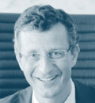

La vostra situazione
Gli avvocati specialisti in diritto del lavoro vi consigliano tra l’altro in caso di:
Che cosa contraddistingue un avvocato specialista
Per facilitare i cittadini nella ricerca di un patrocinatore qualificato, nel 2006 la Federazione Svizzera degli Avvocati FSA ha introdotto, con il titolo di «avvocato specialista FSA», un nuovo marchio di qualità in diversi ambiti: diritto del lavoro, diritto successorio, diritto della costruzione e immobiliare, diritto di famiglia e diritto della responsabilità civile e delle assicurazioni.

Gli avvocati che hanno ottenuto il titolo di «avvocato specialista FSA in diritto del lavoro» adempiono precise condizioni: oltre a vantare un’esperienza pratica superiore alla media nel settore e una pluriennale esperienza nell’esercizio dell’avvocatura, hanno assolto un corso di specializzazione intensivo e di indirizzo pragmatico e hanno superato un esame scritto e un colloquio professionale. Una volta ottenuto il titolo, hanno inoltre l’obbligo di partecipare a corsi periodici di formazione permanente.
 Elenco degli avvocatiTrovare un avvocato202 avvocati specialisti in 17 cantoni
Elenco degli avvocatiTrovare un avvocato202 avvocati specialisti in 17 cantoni

Avvocati specialisti FSA in diritto del lavoro
Vantaggi per i clienti
Di fronte a questioni giuridiche complesse, i clienti traggono enorme vantaggio dalla grande competenza dell’avvocato specialista, il quale è spesso in grado, grazie alle conoscenze specifiche che possiede, di fornire ai suoi assistiti un aiuto più pronto ed efficace.
Profonde conoscenze, vasta esperienza
L’avvocato specialista è comunque anche un generalista e in quanto tale è in grado di svolgere tutte le funzioni di un comune avvocato, poiché possiede sempre profonde conoscenze ed una vasta esperienza riguardo all’ordinamento giuridico svizzero. A parte della sua specializzazione, è in grado di fornire ai suoi assistiti un appoggio completo anche in tutti gli altri campi del diritto.
Specialisti in tutta la Svizzera
 Meyer Thomas M. lic.iur.Meyer & WipfZürich · ZH
Meyer Thomas M. lic.iur.Meyer & WipfZürich · ZH Geel Gian lic. iur., LL.M.Reichenbach Rechtsanwälte AGZürich · ZH
Geel Gian lic. iur., LL.M.Reichenbach Rechtsanwälte AGZürich · ZH Raess-Eichenberger Susanne Dr. iur.Nötzli Raess Bächtold RechtsanwälteZürich · ZH
Raess-Eichenberger Susanne Dr. iur.Nötzli Raess Bächtold RechtsanwälteZürich · ZH Binder ErichBinder Sutter Mumenthaler WigetZürich · ZH
Binder ErichBinder Sutter Mumenthaler WigetZürich · ZH Bächtold Rahel lic. iur.Nötzli Raess Bächtold RechtsanwälteZürich · ZH
Bächtold Rahel lic. iur.Nötzli Raess Bächtold RechtsanwälteZürich · ZH Chavanne Michelr & associés, avocatsLausanne · VD
Chavanne Michelr & associés, avocatsLausanne · VD Nötzli Harry F. Dr. iur.Nötzli Raess Bächtold RechtsanwälteZürich · ZH
Nötzli Harry F. Dr. iur.Nötzli Raess Bächtold RechtsanwälteZürich · ZH Bonard AlineCBWM & AssociésLausanne · VD
Bonard AlineCBWM & AssociésLausanne · VD
Wyler RémyCBWM & AssociésLausanne · VD Heller Heinz Dr.iur.Heller Rechtsanwälte AGZürich · ZH
Heller Heinz Dr.iur.Heller Rechtsanwälte AGZürich · ZHCampi di attività
Gli avvocati specialisti consigliano i loro clienti in un ambito preciso o in tutti gli ambiti del diritto del lavoro, in particolare nei seguenti settori:
Campi di attività Sede del Tribunale federale a Losanna
Sede del Tribunale federale a LosannaPer cantone
202 avvocati specialisti in 17 cantoni